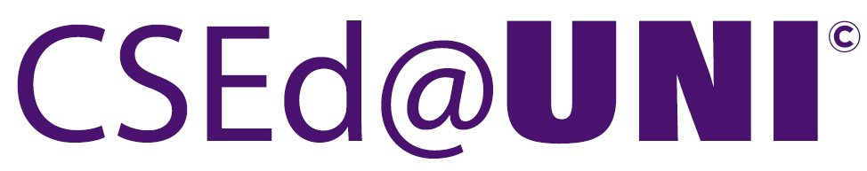
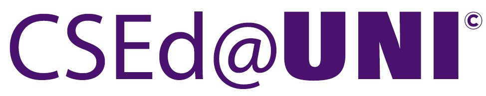

Teacher Preparation Program
Curriculum Project

Teacher Preparation Program
Curriculum Project
This is the website for supplemental information to expand on our article published at SIGCSE 2025, "Curriculum for a Comprehensive Statewide In-Service CS Teacher Training Program".
The following general syllabus statements for each class discuss course learning outcomes, competencies linked to CSTA Computer Science K-12/Teacher Standards, and standards-based grading rubrics.
Disclaimer: We have designed our instruction to correspond with the CSTA K-12 and educator standards. We have not had our content approved by the CSTA Standards Review Team to validate a crosswalk, as CSTA has paused standards alignment while working to revise the CSTA K-12 Standards for the planned release in 2026.
For more information about the program, please contact us. You can find our contact information on our websites below: